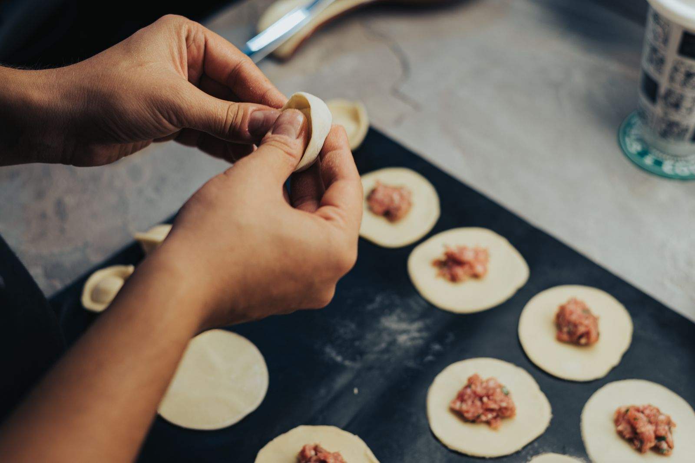
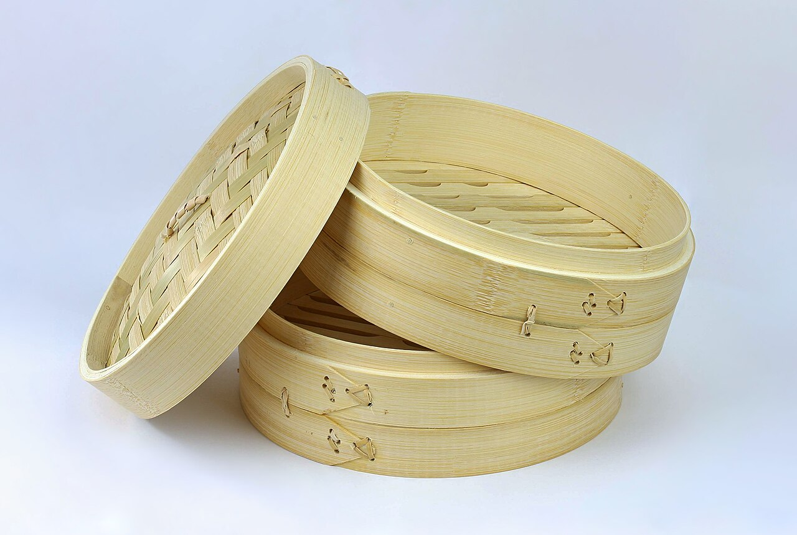
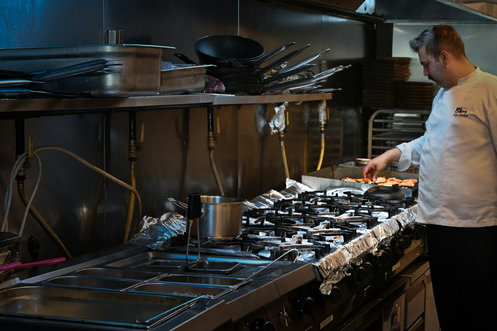

Tea First
The pot arrives before the food — the oldest ritual at the table.
The Dim Sum Experience
Dim sum is less a single dish and more a way of eating: order a few baskets, pour the tea, and keep going. The table fills slowly — steamed next to fried, savoury next to sweet — and everyone finds something to reach for.
That rhythm is what we love about it. A quiet weekday lunch can be two baskets and a pot of tea, while a weekend gathering becomes an afternoon of passing plates, trying "just one more", and staying longer than you planned.
The pot arrives before the food — the oldest ritual at the table.
Baskets land in the middle of the table and travel outward.
Variety over quantity — order small, taste widely, add more.
Chef's Favorites
A short, edited list of house favourites — the baskets the kitchen is happiest to send out.
Prices are editable samples from js/menu.js.
Loading chef's favorites…
Inside Our Kitchen
Most of what makes dim sum special happens before the basket ever reaches your table: dough rested and rolled thin, fillings mixed in small batches, pleats closed by hand, and steamers watched until the moment they are ready.
Dumpling preparation
Wrappers rolled to the right thickness so they stay delicate in the steamer.
Bamboo steaming baskets
Stacked over rolling steam, cooked to order and carried straight out.
Fresh ingredients
Vegetables, aromatics and fillings prepared the same day they are served.
Chef craftsmanship
Pleats, folds and finishes learned by repetition, not by machine.





Weekends
Brunch, unhurried
Weekend Brunch
Weekends deserve a longer table. Our brunch experience is built for the kind of meal where the tea keeps coming, plates keep arriving, and nobody is checking the time.
Come hungry
Pick a time that suits you and we will make sure the steamers are ready when you arrive.